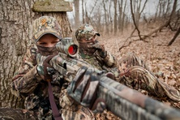

Hunting Inspiration
"If some animals are good at hunting and others are suitable for hunting, then the Gods must clearly smile on hunting."(Aristotle 384 BC-322 BC)

- Hunting comes from all backgrounds and it is not just a mans sport anymore. Woman have been joining the hunt for many years now and it is not uncommon to see a woman by a mans side within the deer stand or behind a turkey blind.
- The American spirit of hunting is starting to overcome the populous due to the ever growing need to support ones family in these troubling times of economic peril. It is through hunting that we go back to our roots and find ways to survive within the lands we have grown to love and cherish.
- As you travel through the pages, I hope that you find the information informative as well as enlightening as an easy to go through page for your hunting needs no matter how big or small.